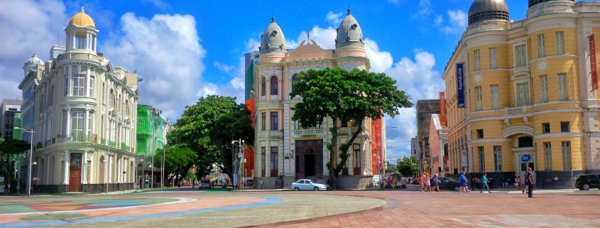

"Explore o Encanto do Recife Antigo: Descubra os Destinos Turísticos Imperdíveis"
Através da história e cultura do Recife Antigo, uma página dedicada a destacar seus principais pontos turísticos emerge como um guia essencial para os viajantes e moradores locais. Este enclave encantador é uma mistura de arquitetura colonial, ruas de paralelepípedos e uma energia pulsante que ressoa com a vida moderna e a herança histórica.
Ao navegar por essa página, os visitantes são imersos em uma jornada através dos marcos emblemáticos que definem o Recife Antigo. Desde o majestoso Marco Zero, onde as águas dos rios Capibaribe e Beberibe se encontram em um espetáculo de beleza natural, até os mercados de artesanato e gastronomia que exalam os aromas e cores vibrantes do Nordeste brasileiro.
Cada ponto turístico é apresentado com detalhes históricos fascinantes, revelando as histórias por trás das muralhas do Forte das Cinco Pontas, o encanto pitoresco da Rua do Bom Jesus com suas casas coloridas e o icônico Museu Cais do Sertão, que celebra a cultura nordestina de forma cativante.
Com fotografias inspiradoras, dicas práticas e sugestões de itinerários, essa página se torna um companheiro indispensável para aqueles que desejam mergulhar na riqueza histórica e na beleza contemporânea do Recife Antigo. Aproveitem essa viagem.

Marco Zero
O Marco Zero de Recife é um ponto emblemático que marca o início da contagem das distâncias rodoviárias que partem da capital pernambucana. Localizado no bairro do Recife Antigo, à beira do Rio Capibaribe, esse marco é mais do que uma mera referência geográfica; é um símbolo cultural e histórico da cidade.
Inaugurado em 1937, o Marco Zero é caracterizado por uma rosa dos ventos em pedra portuguesa, projetada pelo escultor Abelardo da Hora, que marca o centro da antiga cidade de Recife. Ao seu redor, o ambiente respira história, com casarões coloniais, igrejas centenárias e pontes que cruzam os rios que cortam a cidade.
Além de seu significado geográfico, o Marco Zero tornou-se um ponto de encontro para moradores e visitantes, que frequentam a região para desfrutar de sua atmosfera vibrante. Ao longo dos anos, tornou-se um polo cultural, com apresentações de música, dança, exposições de arte e eventos diversos que refletem a diversidade e a efervescência cultural de Recife.
Hoje, o Marco Zero é não apenas um ponto de partida para viagens rodoviárias, mas também um marco simbólico do orgulho e da identidade recifense, representando o encontro entre o passado e o presente, entre a tradição e a modernidade, em uma cidade que pulsa com energia e criatividade.

Rua Bom Jesus
A Rua Bm Jesus é uma via emblemática enraizada na memória e no tecido urbano de muitas localidades. Seu nome pode variar conforme a região, mas sua essência permanece como um ponto de convergência cultural, histórica e social. Em muitas cidades, ela é muito mais do que apenas uma rota de tráfego; é um microcosmo da vida cotidiana, onde as pessoas se encontram, negócios florescem e histórias são contadas.
Ao percorrer a Rua Bm Jesus, é como folhear as páginas de um livro antigo, onde cada esquina revela uma nova narrativa. As fachadas das lojas refletem a diversidade do comércio local, desde pequenas mercearias até boutiques elegantes. O vaivém constante de pedestres cria um ritmo pulsante, enquanto os sons característicos da rua - desde o burburinho das conversas até o eco dos passos - compõem uma sinfonia urbana única.
Mas além de seu papel como centro comercial, a Rua Bm Jesus muitas vezes carrega consigo um rico legado histórico. Pode ter sido nomeada em homenagem a uma figura local proeminente, um herói esquecido ou um evento marcante do passado. Essa conexão com a história dá profundidade à sua identidade, transformando-a em mais do que apenas um endereço, mas sim em um lugar onde o passado e o presente se entrelaçam.
No entanto, não são apenas os aspectos tangíveis que definem a Rua Bm Jesus. É também um espaço de encontro e interação humana. É onde vizinhos se cumprimentam ao passar, onde amigos se encontram para tomar um café e onde estranhos se tornam brevemente ligados por um momento compartilhado. Essa teia de relações humanas forma o verdadeiro coração pulsante da rua.
Assim, seja ela encontrada em uma cidade grande ou em uma pequena vila, a Rua Bm Jesus transcende sua função básica como uma simples via de tráfego. É um símbolo de vida comunitária, um testemunho da resiliência e da vitalidade das cidades e de seus habitantes. Em cada esquina, em cada loja, em cada rosto que passa, reside uma parte da história e da alma de um lugar. E é essa riqueza de experiências que torna a Rua Bm Jesus tão especial e tão eternamente relevante.

Cais do Sertão
O Museu Cais do Sertão, localizado em Recife, é uma homenagem viva ao rico e diversificado universo cultural do sertão nordestino. Mais do que um simples espaço expositivo, o museu é um mergulho profundo na alma e na história dessa região tão marcante do Brasil.
Ao adentrar o Cais do Sertão, os visitantes são imediatamente envolvidos por uma atmosfera que evoca a vida e os desafios do sertanejo. Exposições interativas, obras de arte inspiradoras e instalações audiovisuais cativantes transportam os visitantes para os diversos aspectos da vida no sertão, desde a música e a literatura até as tradições culturais e os desafios enfrentados pelo povo dessa região.
O museu não apenas celebra as riquezas culturais do sertão, mas também proporciona uma reflexão sobre questões sociais e ambientais que afetam essa área tão emblemática do Brasil. Ao explorar temas como a seca, a migração e a resiliência do povo sertanejo, o Cais do Sertão convida os visitantes a uma jornada emocionante e educativa.
Além das exposições permanentes, o museu também oferece uma variedade de atividades educativas, eventos culturais e apresentações ao vivo, proporcionando uma experiência completa e imersiva para os visitantes de todas as idades.
Em suma, o Museu Cais do Sertão é muito mais do que um espaço de preservação histórica; é um verdadeiro tributo à força e à diversidade do povo nordestino, além de ser um convite para explorar e compreender as complexidades e as riquezas do sertão brasileiro.